| Ant Attack | How a scene is drawn |
Ant Attack draws the whole of what you see afresh every frame. There is no keeping track of what moved: the city round the player is read from the map, turned into a picture in a render buffer at RENDER_BUFFER, the people and ants put in at the right depth, and the middle of the buffer copied to the screen. This page follows one frame through that, in the game's own code, from DRAW_VIEW's first call to its last.
Not a staged scene: a game started as the build starts one (the boy chosen, the story card and the prompt to start passed), V held for 12 frames to walk in at the gate, then nothing pressed for 390 frames while the ants came out of their nest to him. By then all five have reached the wall, the girl is lying where she waits on level 1, on the wall beside the gate, and the boy stands in the gateway. Everything was run in SkoolKit's simulator when this page was built. This is the screen at the end of the frame:
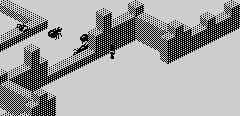
The frame, as COPY_TO_SCREEN leaves it.
The view is one of four, chosen with 0, P, ENTER or SPACE (READ_VIEW_KEYS), each looking at the city from a different corner. $B422 holds which, and VIEW_ORIGIN the cell the view is read from: the key sets it to the player's cell less an offset, so that the player lands in the middle of the picture. The offsets are the operands in READ_VIEW_KEYS; the steps are the cells the four gathering routines (GATHER_VIEW0, GATHER_VIEW1, GATHER_VIEW2, GATHER_VIEW3) were seen to read, run from the same origin (x, y, relative to it):
| View | Key | Origin from the player | Along a half-row | Second half-row starts at | Next row starts at |
|---|---|---|---|---|---|
| 0 | SPACE | +3, -18 | +1, +1 | +0, +1 | -1, +1 |
| 1 | ENTER | +18, +3 | -1, +1 | -1, +0 | -1, -1 |
| 2 | P | -3, +18 | -1, -1 | +0, -1 | +1, -1 |
| 3 | 0 | -18, -3 | +1, -1 | +1, +0 | +1, +1 |
Each is the one before turned a quarter. The same frame's scene in all four, drawn by DRAW_VIEW with the view set as the key would set it:
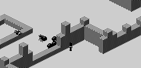
View 0 (SPACE)
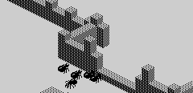
View 1 (ENTER)
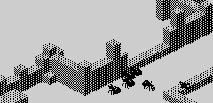
View 2 (P)
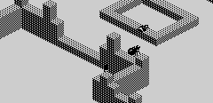
View 3 (0)
SELECT_BLOCK_DRAWER picks the block picture to suit: DRAW_BLOCK for views 0 and 2 and DRAW_BLOCK_TURNED for 1 and 3, since turning a quarter swaps which face of a block is lit.
GATHER_VIEW jumps to the view's own routine, 32 bytes apart from GATHER_VIEW0, which reads 21 rows of 32 cells into VIEW_CELLS through READ_MAP_CELL. A row is two half-rows of 16 cells, each along a diagonal of the map, the second one cell to the side of the first; each row starts one cell further along the other diagonal. So the view is a diamond of the map, and its rows run across the screen. A cell outside the walls, with x or y below $80, reads as 0: the land outside is flat and empty.
The first 16 rows are the 512 places of the picture. The other five are read only for their taller blocks: a block h high appears 2h half-rows up the screen from its cell, so the cells nearest the viewer, below the bottom of the picture, can still show their tops in it.
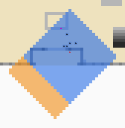
The city from above (x across, y down) around the cells this frame read, blocks grey by height, outside the walls white: the 512 cells read for the places tinted blue, the five further rows orange. The player is the red dot, the girl the purple, the ants black -- and the ants are in the map, as blocks (see below).
BUILD_PLANES turns the gathered cells into PLANES: 512 places, one for each position a block's picture can take, 32 half-rows of 16. It fills them with $FF (CLEAR_PLANES) and then calls MARK_PLANE once for each height, lowest first. For height h, MARK_PLANE reads the gathered cells 32h further on -- h rows, 2h half-rows -- and writes the height's bit, $01 to $20, into every place whose cell has a block at that height. A higher block overwrites a lower one.
That is the whole of the 3D. A block one higher and one row nearer has its picture in exactly the same place as the block behind it, so it hides that one completely, and keeping only the highest height for each place throws away nothing that could be seen (worked out from the projection below, and borne out by the pictures). What is left is, for each place on the screen, the one block to be drawn there, if any.
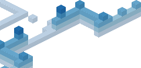
PLANES for this frame, painted in DRAW_SCENE's order with one flat colour per height (lightest for the ground layer, darker upwards) in place of the shaded block.
Before that, CLEAR_BUFFER_ROWS clears the part of the buffer that will be shown: 29 rows, four apart, on each of four calls, $B44F moving the starting row on each time, so rows 12 to 127 are cleared. The rows above and below, and nothing else, keep what the last frames left there (the leftovers outside the blue frame), since they are never copied.
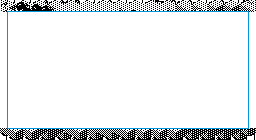
The render buffer after clearing. The blue frame is the part COPY_TO_SCREEN copies.
PROJECT_SPRITES places the eight objects in the same grid. For each, from the fifth ant back to the player, it takes the position relative to the view origin, (dx, dy), turns it for the view -- (u, v) is (dx, dy) in view 0, (dy, -dx) in view 1, (-dx, -dy) in view 2 and (-dy, dx) in view 3 -- and projects it: the half-row is v - u - 2h and the column (u + v) / 2, h being the height. Either out of 0-31 and the object is out of view (OFF_VIEW gives it a place past the end). The place is 512h + 16 × half-row + column, plus one: the height counts whole passes of the painting below. On the screen that is 8(u + v) pixels across and 4(v - u) - 8h down from the corner of the buffer.
With the place goes the sprite frame: the record's first frame, plus four times its animation frame, plus its facing turned by the view -- or, with bit 7 of the animation frame set, that frame outright. This frame's list, in SPRITE_LIST:
| Object | Cell and height | Place | Frame |
|---|---|---|---|
| ant 5 | $BB, $F8, 0 | 151 = 512 × 0 + 16 × 9 + 6 + 1 | $F8 |
| ant 4 | $B8, $F9, 0 | 214 = 512 × 0 + 16 × 13 + 5 + 1 | $FB |
| ant 3 | $B9, $F8, 0 | 182 = 512 × 0 + 16 × 11 + 5 + 1 | $F8 |
| ant 2 | $B8, $F5, 0 | 148 = 512 × 0 + 16 × 9 + 3 + 1 | $F9 |
| ant 1 | $B7, $F9, 0 | 230 = 512 × 0 + 16 × 14 + 5 + 1 | $FB |
| the grenade | $00, $40, 0 | out of view | $68 |
| the rescued person | $B6, $F3, 1 | 626 = 512 × 1 + 16 × 7 + 1 + 1 | $78 |
| the player | $B9, $FB, 0 | 232 = 512 × 0 + 16 × 14 + 7 + 1 | $DE |
SORT_SPRITES bubble-sorts the list by place, and SPRITE_DISTANCES turns each place into its distance from the one before; the painting counts those down:
| Order | Object | Place | Count |
|---|---|---|---|
| 1 | ant 2 | 148 | 148 (the place itself) |
| 2 | ant 5 | 151 | 3 |
| 3 | ant 3 | 182 | 31 |
| 4 | ant 4 | 214 | 32 |
| 5 | ant 1 | 230 | 16 |
| 6 | the player | 232 | 2 |
| 7 | the rescued person | 626 | 394 |
| 8 | the grenade | out of view | 64846 |
SCROLL_VIEW looks at where the player went: outside the middle of the view (columns 4 to 11 of 16, half-rows 8 to 23 of 32) it moves the view origin a cell the way the player faces, unless the player is jumping or falling. The cells are already gathered, so it shows next frame.
DRAW_SCENE makes seven passes over PLANES, one for each height's bit from $01 to $40, and in each pass finds every place holding that bit, from the first place to the last, with CPIR, jumping to the block picture for each (BLOCK_DRAWN brings it back). The places run from the back of the view to the front, and the passes from the ground up, so everything is painted after what it covers. The $40 pass has no blocks in it -- there is no seventh height -- but it keeps the count going for anything standing on top of the tallest walls.
The objects are threaded in with no test of their own. CPIR counts BC down as it goes, and BC is the distance to the next object in the sorted list, counted across all the passes. When CPIR runs out of count before it finds a block, DRAW_HERE draws the object due at that place, and NEXT_SPRITE loads the next distance (skipping any of 0: a second object in exactly the same place is not drawn). So an object at height h is painted in pass h, after every block lower than it and every block at its height further back, and before the rest.
An ant is a block in the map (see how the ants hunt), so its own cell is marked in PLANES like any wall -- and an ant's place is exactly where its block would be drawn. The plus one in every place is what makes that work: CPIR finds the ant's block and runs out of count on the same byte, and the running out wins (JP PO), so the sprite is drawn there instead and the scan carries on past the block. In this frame four of the ants' places held their own $01 and no block was drawn at any of them; the other ant's place held a taller block in front of it, which pass 2 painted over it.
| Pass | Height | Blocks drawn | Sprites drawn (frame at place) |
|---|---|---|---|
| $01 | 0 | 46 | $F9 at 147, $F8 at 150, $F8 at 181, $FB at 213, $FB at 229, $DE at 231 |
| $02 | 1 | 32 | $78 at 113 |
| $04 | 2 | 29 | none |
| $08 | 3 | 6 | none |
| $10 | 4 | 2 | none |
| $20 | 5 | 0 | none |
| $40 | 6 | 0 | none |
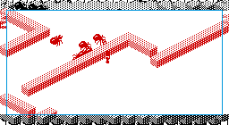
After the $01 pass (height 0): what it painted in red.
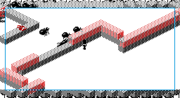
After the $02 pass (height 1): what it painted in red.
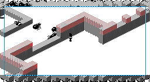
After the $04 pass (height 2): what it painted in red.
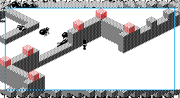
After the $08 pass (height 3): what it painted in red.
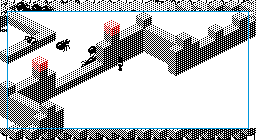
After the $10 pass (height 4): what it painted in red.
Passes 5, 6 drew nothing in this frame. The whole paint drew 115 blocks and 7 sprites.
The block is code. DRAW_BLOCK and DRAW_BLOCK_TURNED are unrolled runs of stores with the picture in their operands: eight steps, each painting a row of the top face, merged with what is behind it at the edges, and the row eight below it, the sides, outright. PLANE_TO_BUFFER gives each place its corner in the buffer: a place is 16 pixels wide, each half-row four pixels below the last and half a place across, so the blocks tile like bricks. Here are the two pictures, each painted by its own routine twice, over a clear buffer and a full one: the pink pixels are where the background shows through.
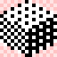
DRAW_BLOCK, views 0 and 2.
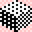
DRAW_BLOCK_TURNED, views 1 and 3.
A sprite frame is 64 bytes, 16 rows of mask, graphic, mask, graphic; frame f is 64f bytes from PLAY, so the boy's and the ants' frames are in MORE_SPRITES and the girl's in SPRITES (all of them are on the sprites page). DRAW_SPRITE ANDs each byte of the buffer with the mask and ORs in the graphic. The boy's frame in this scene is $DE, at FRAMEDE; here it is drawn by DRAW_SPRITE over two blocks drawn by DRAW_BLOCK, what it changed in red. The mask clears very little: the people and the ants are drawn almost entirely in ink, ORed over whatever is behind them.
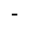
The mask: black where it clears the background.
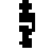
The graphic.
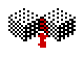
Drawn over two blocks.
COPY_TO_SCREEN copies rows 12 to 127 of the buffer, bytes 1 to 30 of each, to the same lines and columns of the screen with LDIR: 116 rows of 30 bytes. The byte either side and the rows above and below are margin, for blocks and sprites that hang over the edge of the view. The attributes are never touched: the play area stays black on white, as BASIC left it.
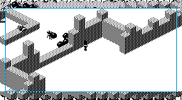
The render buffer as the frame began: the last frame's picture, whole, margins and all.
T-states for each stage of DRAW_VIEW, counted in the simulator for the frame followed above and, for the range, over 24 views: that frame's place and the places the person waits on levels 1 to 5, each in all four views. DRAW_SCENE's time is split by where the program counter was: inside a block drawer, inside DRAW_SPRITE, or in the scan itself.
| Stage | This frame | Share | Range over the views |
|---|---|---|---|
| Gather the cells (GATHER_VIEW, READ_MAP_CELL 672 times) | 82,523 | 15% | 85,713 – 91,803 |
| Build the planes (BUILD_PLANES: CLEAR_PLANES, then MARK_PLANE six times) | 115,541 | 21% | 115,351 – 115,993 |
| Clear the buffer (CLEAR_BUFFER_ROWS four times) | 43,552 | 8% | 43,552 |
| Place the objects (PROJECT_SPRITES) | 3,832 | 1% | 3,220 – 4,003 |
| Scroll? (SCROLL_VIEW) | 148 | 0% | 56 – 274 |
| Sort them (SORT_SPRITES) | 5,517 | 1% | 1,139 – 11,011 |
| Distances (SPRITE_DISTANCES) | 1,053 | 0% | 1,053 |
| Pick the block (SELECT_BLOCK_DRAWER) | 65 | 0% | 65 – 70 |
| Paint (DRAW_SCENE) | 205,754 | 38% | 105,899 – 313,589 |
| of which drawing blocks | 102,120 | 19% | 27,528 – 218,448 |
| of which drawing sprites | 17,444 | 3% | 0 – 17,444 |
| of which the CPIR scan and the passes | 86,190 | 16% | 78,371 – 95,141 |
| Copy to the screen (COPY_TO_SCREEN) | 80,888 | 15% | 80,888 |
| All of DRAW_VIEW | 538,873 | 100% | 447,871 – 654,042 |
A block costs about 888 T-states to draw, and the scan through PLANES, seven passes of 512 bytes by CPIR at 21 T-states a byte, is about 75,000 before anything is found. The frame as a whole, over the 32 frames of the run above -- the 12 walking in, and 20 more at the spot the frame was taken:
| Part of the frame | T-states |
|---|---|
| The player (MOVE_PLAYER) | 1,069 – 1,392 |
| The rescued person (MOVE_RESCUEE) | 499 – 506 |
| The grenade (MOVE_GRENADE) | 798 |
| The ants (MOVE_ANTS) | 4,121 – 6,030 |
| The view keys (READ_VIEW_KEYS) | 200 |
| Drawing (DRAW_VIEW) | 531,177 – 540,620 |
| Events (HANDLE_EVENTS) | 85 – 1,145 |
| Grenade messages (GRENADE_SOUNDS) | 49 |
| The clock (COUNT_DOWN_TIME) | 49 – 9,156 |
| The whole frame | 538,341 – 556,933 |
That is about 547,864 T-states, 6.4 frames a second at 3.5 MHz. The simulator does not model the ULA's memory contention, so these are counts, not timings: the real machine is a little slower wherever the code touches the screen (the copy's writes, the printing of the clock) and not at all in the render buffer and the code, which are above $8000. Nothing paces the frames -- there is no HALT or frame count in the loop -- so the game runs as fast as it draws, and drawing is almost all of it. The clock's figure is high one frame in three, when it prints the time through the ROM.